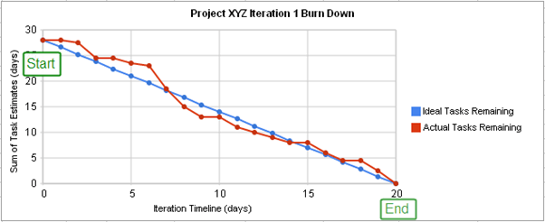

Created by Per Wagner Nielsen
Software Development Manager
Scrum is an iterative and incremental agile software development methodology for managing product development.
A prioritized features list, containing short descriptions of all functionality desired in the product.
Is the basic unit of development
Is a timeboxed effort; it is restricted to a specific duration
Daily short meeting where each member of the development team comes prepared to answer 3 questions
Important: No detailed discussions take place at the stand-up
The sprint burndown chart is a public displayed chart showing remaining work in the sprint backlog
Requirements: A backlog of user stories
Requirements: High level estimates
Requirements: Sprint Planning Meeting I done
Requirements: Sprint Planning Meeting II done
Requirements: Sprint is done
Requirements: Sprint Review